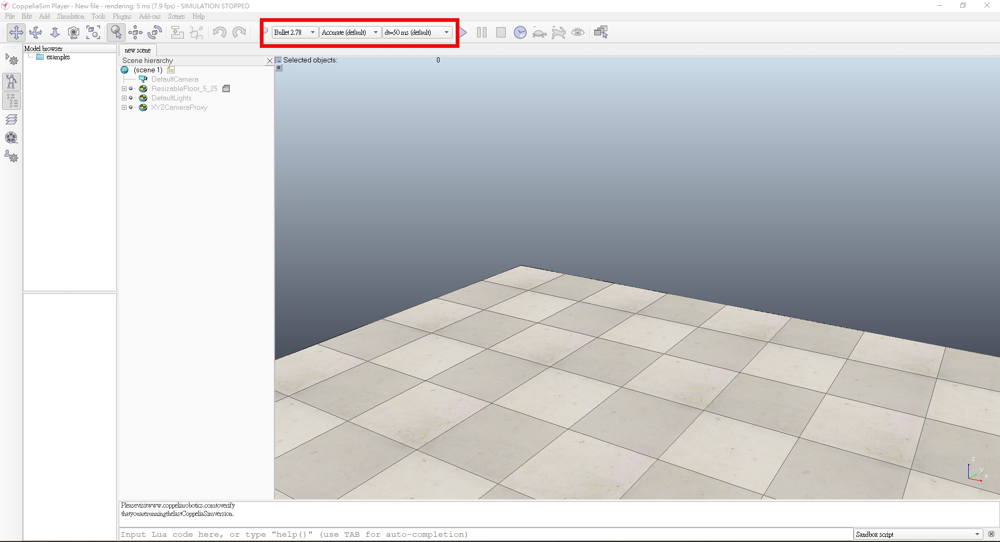
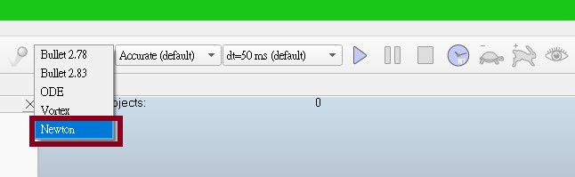
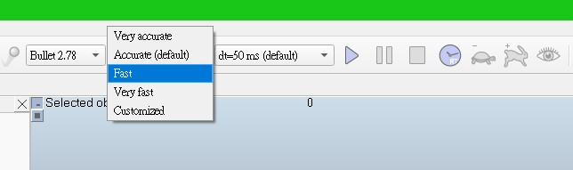
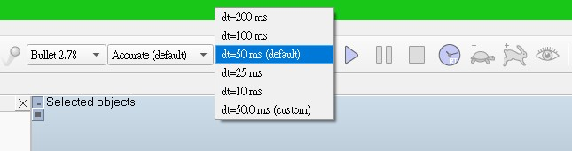

week7 <<
Previous Next >> experience-2
Q&A
用CoppeliaSim模擬機構作動。
在模擬過程有遇到幾個問題:
1.模擬時，動畫跑得很遲鈍如當機一般。
解決辦法:
紅框內的三個方框從左到右分別是引擎、狀態、效能

第一個方框選擇 Newton的引擎(牛頓:較符和機構作動；若選擇Bullet會很卡，因為Bullet大部分是在模擬遊戲動畫的)

第二個方框選 Fast

第三個方框選 dt=50ms

2.模擬太過精密的零件無法正常作動
解決辦法: 無，CoppliaSim無法模擬太精密的東西。
week7 <<
Previous Next >> experience-2